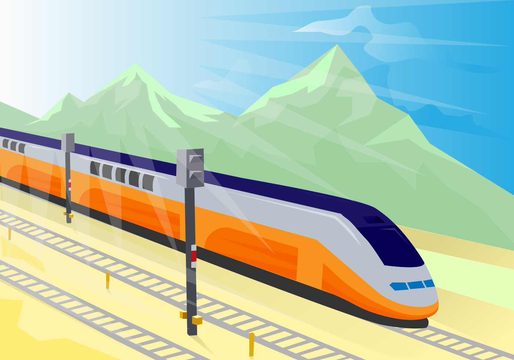

<div class="new-trip-type-select-container">
  <div class="step-text-container">
    <h2>Choose the type of trip</h2>
  </div>

  <div class="trip-type-container" (click)="goToStep2('ROAD')">
    <div class="trip-type">
      
      <h2>Road Trip</h2>
    </div>
    <div class="trip-type" (click)="goToStep2('SKI')">
      
      <h2>Ski Trip</h2>
    </div>
  </div>

  <div class="trip-type-container" (click)="goToStep2('BEACH')">
    <div class="trip-type">
      
      <h2>Beach Trip</h2>
    </div>
    <div class="trip-type" (click)="goToStep2('CITY')">
      
      <h2>City Trip</h2>
    </div>
  </div>

  <div class="trip-type-container" (click)="goToStep2('OTHER')">
    <div class="trip-type">
      
      <h2>Other Trip</h2>
    </div>
  </div>
  <input
    class="other-input"
    type="text"
    *ngIf="showOtherText"
    [(ngModel)]="otherText"
    placeholder="Custom type of trip..."
  />

  <!-- Do I even need a next button if they will just click on the images -->
  <div class="step-actions-container">
    <button class="gw-button primary" (click)="goToStep2('OTHER', true)">
      <div
        *ngIf="nextLoading; else buttonText"
        class="animate-spin rounded-full h-7 w-7 border-t-4 border-b-4 border-white"
      ></div>
      <ng-template #buttonText>Next</ng-template>
    </button>
  </div>
</div>
